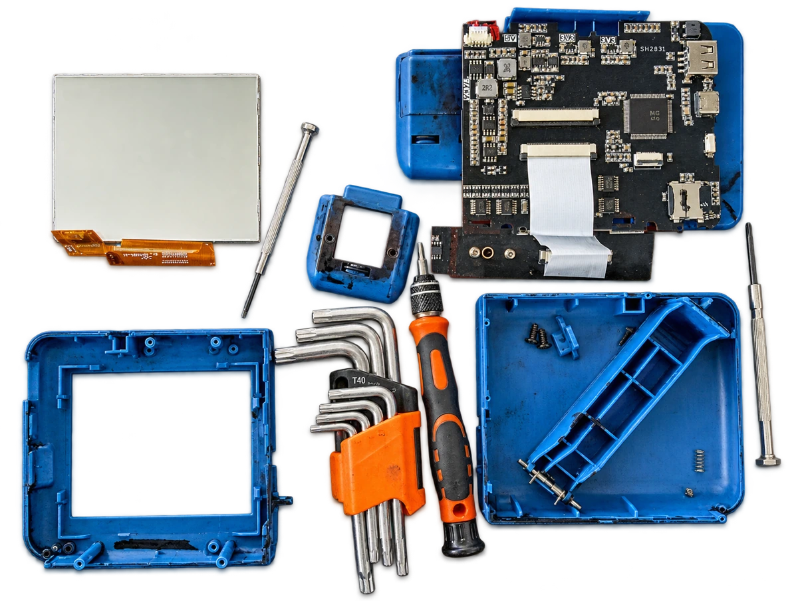

SOPORTE / RIGEL MÉXICO
Estamos contigo. También después.
Recibe orientación para la configuración, impresión y cuidado de tu M1.

RIGEL / ASISTENCIA TÉCNICASERVICIO TÉCNICO EN MÉXICO
Tu equipo, bien acompañado.
Te orientamos en la configuración, el uso del cartucho S70 y las consultas de impresión de tu M1. Cuéntanos qué ocurre para revisar contigo el siguiente paso.
USO Y CUIDADO
Empieza con una buena impresión.
Sigue siempre las indicaciones del manual de tu equipo y cartucho. Consulta al equipo de soporte para recibir los recursos disponibles.
- 01
Prepara el cartucho
Sigue el manual del S70 para preparar e instalar el consumible.
- 02
Configura el mensaje
Revisa fechas, lote, tamaño y contenido en la pantalla de tu M1.
- 03
Haz una prueba manual
Prueba en una muestra del material y revisa la legibilidad y adherencia.
¿Necesitas ayuda con una falla?
Indica el modelo M1, describe el síntoma y las condiciones de impresión. Nuestro equipo revisará contigo la solicitud de servicio.
Enviar consulta técnica¿La M1 utiliza tinta o láser?
Utiliza inyección térmica de tinta (TIJ). En México se ofrece con el cartucho de tinta solvente S70.
¿Cómo funciona la impresión manual?
Configura el mensaje en la pantalla y desplaza manualmente el equipo sobre la superficie según las indicaciones del manual. Realiza primero una prueba en tu material.
¿Qué información puedo imprimir?
Fechas, lotes, textos, logotipos, códigos de barras y QR. Revisa con un asesor el tamaño y el formato de tu mensaje.
¿Qué cartucho utiliza?
El cartucho compatible comercializado por Rigel México es el S70. Puedes solicitar su reposición desde la página del producto.
¿Cómo sé si funciona sobre mi material?
Indica el material, su recubrimiento y las condiciones de la superficie. Nuestro equipo te orientará sobre la evaluación de la tinta y una prueba de adherencia.